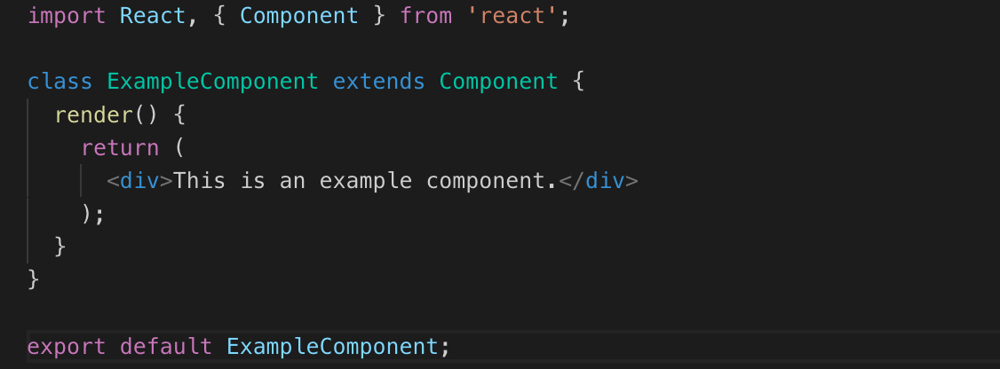

React native
O native aplikacijama
Native aplikacije su aplikacije za specifičnu mobilnu platformu.
Dvije danas najpopularnije platforme su Android i IOS.
Aplikacije za android se razvijaju upotrebom Android Studia, koristeći Javu ili Kotlin.
Za IOS pomoću XCode koji koristi programske jezike Swift ili Objective-C.
Da bi napravili aplikaciju za ove dvije platforme potrebna su nam dva tima, jedan za android drugi za ios.
React Native
Dolaskom React Native kojeg je napravila jedna od največih kompanija, Facebook, nema potrebe za ucenjem Jave ili Swifta.
Omogučeno je nam pravljenje mobilnih aplikacija u JavaScriptu za obje platforme istovremeno.
React native koristi koncepte web programiranja.
Aplikacije koje koriste React Native
Jedne od najpopularnijih aplikacija koriste React Native:
- Facebook
- Skype
- Instagram
- AirBnb
Prednosti i mane React Native
| Prednosti |
Mane |
| Manje vremena za development |
Manjak podrške za nativne API |
| Korištenje Java koda |
Nije u potpunosti cross platforma |
| Hot reloading |
Zavisi od Facebook-a |
| Nativni izgled |
|
| Jedan tim - dvije plaforme |
|
React
O SPA aplikacijama
SPA rade tako da kad korisnik prvu put pošalje request serveru
server mu vrati cijelu aplikaciju. Tada na osnovi trenutne rute ekran se popunjava podacima.
React je obična biblioteka koja nam pruža da pravimo user inteface
pomoću komponenti.
O Reactu
React je najpopularnija front end biblioteka koja se koristi za pravljenje SPA (single page aplikacija).
Kreator je popularna kompanija Facebook. Komponente su dijelovi web stranice. Kako spomenuh ovo je biblioteka pa samo korištenje Reacta
za pravljenje web aplikacije nije moguće. Potrebne su nam dodatne bibloteke kao što su React Router koji
nam daje mogućnost prelaska sa jednog ekrana na drugi. Za pisanje komponenti koristi se JSX ili JavaScript
XML.
Logo

Odlike React-a:
- JSX
- Components
- Hooks
- Fragments
- Lifecycle methods
Primjer React komponente
